Rust
This page has details about uses, and the history and evolution of Rust.
What is Rust Used For?
Rust is a general purpose programming language that focuses on safety and performance.
General History and Evolution of Rust.
Rust started as a side project by Mozilla employee Graydon Hoare. Although he created Rust much earlier, it was released in
2010.

Rust Logo
Rust 1.2-1.5
In 2015, Rust versions 1.2-1.5 were released, which added:
- Compile time improvements
- Support for 64-bit windows OS
- Cargo plug-in support
Rust 1.6-1.14
In 2016, Rust versions 1.6-1.14 were released, which added:
- Libcore
- C ABI dynamic libraries
- Cargo workspaces
- The Try operator
- Rustup 1.0
Rust 1.15-1.20
In 2017, Rust versions 1.15-1.20 were released, which added:
- Derive procedural macros
- Rustbuild
- Associated constants
Rust 2018 Edition
In 2018, Rust released its "2018 Edition", which included:
- Non-lexical lifetimes
- Module systems improvement
- Const functions
Rust 1.34-1.39
In 2019, Rust versions 1.34-1.39 were released, which added:
- Alternative crate registries
- Async/await
Rust 1.42
In 2020, Rust version 1.42 was released, which added:
Companies that use Rust
- Amazon
- Cloudflare
- Discord
- Google
References
Milano, M. (2020, August 10). The Rust Programming Language: Its History and Why It Matters. Talentopia. https://www.talentopia.com/news/the-rust-programming-language-its-history-and-why/
The Rust Core Team (Ed.).
(2020, May 15). Five Years of Rust. The Rust Programming Language Blog. https://blog.rust-lang.org/2020/05/15/five-years-of-rust.html
Ogono, U. (2022, February 9). Who Uses Rust? Companies That
Use Rust and What Rust Is Used For. Career Karma. https://careerkarma.com/blog/who-uses-rust/